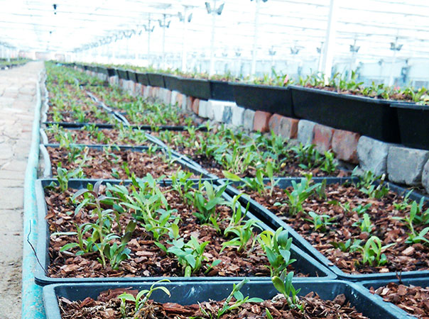

霍山石斛(学名：Dendrobium huoshanense)俗称米斛，是兰科石斛属的草本植物。中国国家地理标志产品。主产于大别山区的安徽省霍山县，大多生长在云雾缭绕的悬崖峭壁崖石缝隙间和参天古树上。 霍山石斛含多糖、生物碱、氨基酸等物质 经中国医药学院药用植物所鉴定多糖含量为18.974%总生物碱为0.03%，能提高人体免疫能力，对人体眼、咽、肺、胃、肠、肾等器官疾病有特殊疗效。以之入药，有降低血糖、抑制心血管疾病，增强机体免疫力及抗癌之效能;以之代茶，可以清咽润喉、清音明目、解暑益气、养胃清热，因其功效奇特，市场稀缺，素有“千金草”、“软一黄金”之称。 药理作用 补五脏虚劳。心阴虚一营养大脑，营养心肌，降心火;肝阴虚一改善肝血循环，养肝明目;脾胃阴虚一养胃生津，抗肿瘤降血糖。中国科技大学、中山医科大学的研究表明：“霍山石斛具有增强T细胞、B细胞，NK细胞和巨噬细胞的作用，对抑制肿瘤和降血糖有非常好的疗效。霍山石斛能大幅度提高体内SOD(延缓衰老的主要物质)水平，对经常熬夜、用脑、烟酒过度，体虚乏力的人群，经常饮用非常适宜。 明目恢复嗓音。台湾阳明大学新药研究中心等科研机构 功效：具有益胃润肺、养阴生津之功效。对亏 精气不足、眼目昏暗、胃热烦渴、咳嗽咽痛、口燥舌苔、熬夜积火、烟酒过度有显著疗效。常服能治标固本、调和阴阳、壮阳补肾、养颜驻容，从而达到保健益寿之功效